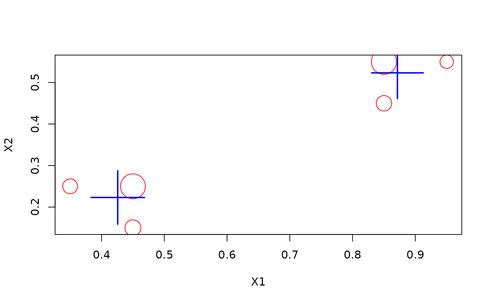

Apply multiple task (DST) to the same data stream. The tasks can be accessed
as a list as $dsts.
Arguments
- dsts
a list of DST objects.
Examples
set.seed(1500)
stream <- DSD_Gaussians(k = 3, d = 2)
## define multiple tasks as a list
tasks <- DST_Multi(list(
DSAggregate_Window(horizon = 10),
DSC_DStream(gridsize = 0.1)
))
tasks
#> - Sliding window
#> - D-Stream
#> Class: DST_Multi, DST
## update both tasks with the same stream
update(tasks, stream, n = 1000)
## inspect the results of the tasks
tasks$dsts[[1]]
#> Sliding windowClass: DSAggregate_Window, DSAggregate, DST
get_model(tasks$dsts[[1]])
#> weight X1 X2 .class
#> 1 1 0.7846384 0.2530028 1
#> 2 1 0.7929913 0.2698001 1
#> 3 1 0.4672507 0.2024330 3
#> 4 1 0.8752531 0.3022704 1
#> 5 1 0.7578388 0.2107837 1
#> 6 1 0.8762682 0.4955705 2
#> 7 1 0.3697506 0.2666007 3
#> 8 1 0.4357268 0.2392414 3
#> 9 1 0.8653654 0.5173357 2
#> 10 1 0.9786715 0.4885950 2
tasks$dsts[[2]]
#> D-Stream
#> Class: DSC_DStream, DSC_Micro, DSC_R, DSC
#> Number of micro-clusters: 6
#> Number of macro-clusters: 2
plot(tasks$dsts[[2]])
